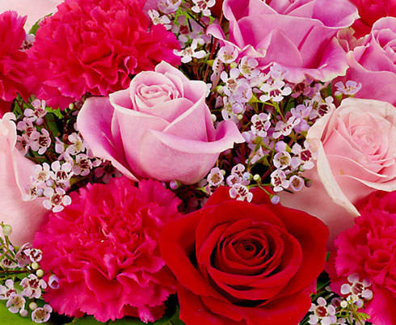

Flowers
7th march 2018
A flower, sometimes known as a bloom or blossom, is the reproductive structure found in flowering plants (plants of the division Magnoliophyta, also called angiosperms). The biological function of a flower is to effect reproduction, usually by providing a mechanism for the union of sperm with eggs. Flowers may facilitate outcrossing (fusion of sperm and eggs from different individuals in a population) or allow selfing (fusion of sperm and egg from the same flower). Some flowers produce diaspores without fertilization (parthenocarpy). Flowers contain sporangia and are the site where gametophytes develop. Many flowers have evolved to be attractive to animals, so as to cause them to be vectors for the transfer of pollen. After fertilization, the ovary of the flower develops into fruit containing seeds.
Main articles: Plant reproductive morphology, Androecium, and Gynoecium sReproductive parts of Easter Lily (Lilium longiflorum). 1. Stigma, 2. Style, 3. Stamens, 4. Filament, 5. Petal Androecium (from Greek andros oikia: man's house): the next whorl (sometimes multiplied into several whorls), consisting of units called stamens. Stamens consist of two parts: a stalk called a filament, topped by an anther where pollen is produced by meiosis and eventually dispersed. Gynoecium (from Greek gynaikos oikia: woman's house): the innermost whorl of a flower, consisting of one or more units called carpels. The carpel or multiple fused carpels form a hollow structure called an ovary, which produces ovules internally. Ovules are megasporangia and they in turn produce megaspores by meiosis which develop into female gametophytes. These give rise to egg cells. The gynoecium of a flower is also described using an alternative terminology wherein the structure one sees in the innermost whorl (consisting of an ovary, style and stigma) is called a pistil. A pistil may consist of a single carpel or a number of carpels fused together. The sticky tip of the pistil, the stigma, is the receptor of pollen. The supportive stalk, the style, becomes the pathway for pollen tubes to grow from pollen grains adhering to the stigma. The relationship to the gynoecium on the receptacle is described as hypogynous (beneath a superior ovary), perigynous (surrounding a superior ovary), or epigynous (above inferior ovary).